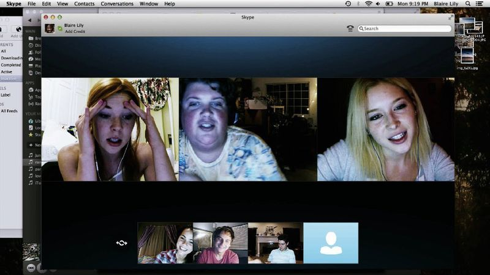
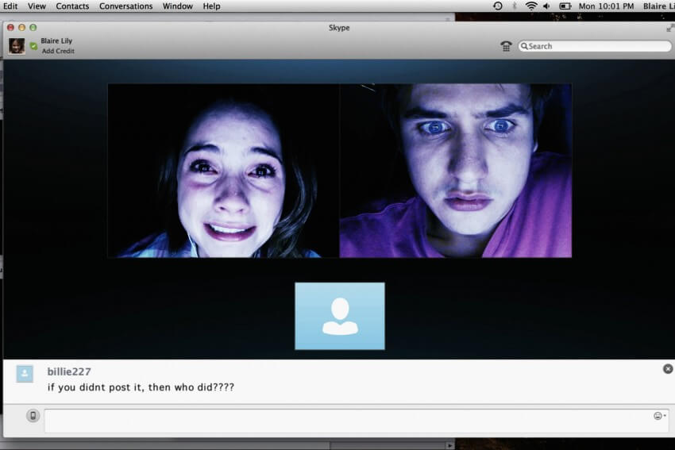

Mise en scène de notre génération
Unfriended est un film d’horreur qui a fait beaucoup parlé de lui en 2015 pour sa réalisation uniquement dans un format de capture d’écran. C’est un film d’horreur réalisé par Levan Gabriadze en 2015. Le film retranscrit l’activité de l’ordinateur de Blaire Lily où on découvre que son amie Laura Barns se suicide suite à une publication d’une vidéo d’elle alcoolisé. Tout le film se passe sur le point de vue de l’ordinateur de Lily et notamment en conversation vidéo sur Skype avec 5 amis
Il prend une autre tournure lorsqu’un esprit apparaît dans leur conversation et se met à leur lancer des défis de vie ou de mort. Tout au long du film, on voit Lily naviguer sur internet, on y voit notamment beaucoup la page facebook puisque c’est sur ce réseau social qu’est postée la vidéo de son amie défunte Laura, On voit y Lily poster des commentaires sur des statuts. Elle ira également chercher de l’aide sur Omegle qui est une plateforme pour rencontrer et parler avec des inconnus en conversation vidéo sans succès malheureusement pour cette héroïne et ses amis.
Bande annonce
(vidéo)Et leur conversation vidéo ?
Dans le film, Lily et ses amis sont sans cesse connectés ensemble avec les caméras allumées pendant une bonne heure. Mais derrière ses caméras, cet appel, il y a des chiffres et une consommation. Les données utilisées pour cet appel vidéo dépendent de plusieurs critères : la qualité vidéo, l’application utilisée pour communiquer et le nombre de personnes dans l’appel. En moyenne une conversation vidéo en HD d’une heure consomme 1,3 Go de données, ils étaient 6 utilisateurs au total donc presque 8Go d’internet utilisé par 6 personnes pour une heure de vidéo.

Selon l'ADEME, l’envoi d'un mail de 1 Mo serait responsable de l’émission de 19 grammes de CO2. Si on calcule pour la consommation de l’appel de Lily, on a presque 151 kg de CO2 ce qui est une masse considérable pour si peu de temps en appel vidéo. Avec cette consommation, une voiture consommant 110 grammes de Co2 par kilomètre aurait parcouru 1400km de distance : Ce qui permettrait de faire un voyage Dunkerque - Lubawa, en Pologne, soit traverser 4 pays. Ce qui amène à la réflexion sur nos actes à travers internet et comment on utilise cet outil révolutionnaire mais qui pollue énormément notre atmosphère et ce n’est que l’appel vidéo..